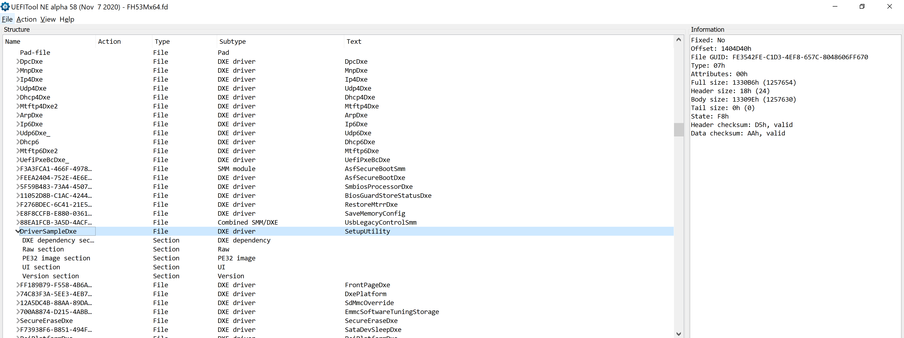

Published: July 28, 2021
Recently I saw this hacker news post regarding this Amazon review of an Acer Predator Helios 300 Gaming Laptop. The complaint in the review is that the Secure Boot settings are disabled by default on Amazon-sold units of this laptop. The latest BIOS image for this laptop can be found here: https://www.acer.com/ac/en/US/content/support-product/8376. As of this writing the latest version is 2.02 released 5/21/2021.
What I wanted to learn is whether or not there was a configuration option that would disable the Secure Boot Enable / Disable switch in the Firmware UI. If so, how could we circumvent this implementation?
Extracting the UEFI image:
$ binwalk GH53M202.exe
Scan Time: 2021-07-28 20:42:22
Target File: /home/nick/acer-predator-helios-300/GH53M202.exe
MD5 Checksum: c113ee83aee992091d05d1a1efb88735
Signatures: 404
DECIMAL HEXADECIMAL DESCRIPTION
--------------------------------------------------------------------------------
0 0x0 Microsoft executable, portable (PE)
179 0xB3 Copyright string: "Copyright (C) 2000 CW Sandmann (sandmann@clio.rice.edu)."
256 0x100 Copyright string: "Copyright (C) 1993-1995 DJ Delorie."
349 0x15D Copyright string: "copyright"
590965 0x90475 7-zip archive data, version 0.2
2002445 0x1E8E0D MySQL MISAM index file Version 11
$ dd if=GH53M202.exe of=bios.7z bs=590965 skip=1
36+1 records in
36+1 records out
21787157 bytes (22 MB, 21 MiB) copied, 0.0501695 s, 434 MB/s
$ 7z x bios.7z
7-Zip [64] 16.02 : Copyright (c) 1999-2016 Igor Pavlov : 2016-05-21
p7zip Version 16.02 (locale=C.UTF-8,Utf16=on,HugeFiles=on,64 bits,8 CPUs Intel(R) Xeon(R) CPU E5-2660 v2 @ 2.20GHz (306E4),ASM,AES-NI)
Scanning the drive for archives:
1 file, 21787157 bytes (21 MiB)
Extracting archive: bios.7z
--
Path = bios.7z
Type = 7z
Physical Size = 21787157
Headers Size = 522
Method = LZMA:24 BCJ
Solid = +
Blocks = 2
Everything is Ok
Files: 16
Size: 41384967
Compressed: 21787157
$ ls
BiosImageProcx64.dll FH53Mx64.fd FlsHook.exe GH53Mx64.fd H2OFFT.cat H2OFFT64.sys Microsoft.VC90.MFC.manifest mfc90u.dll msvcr90.dll
Ding.wav FWUpdLcl.exe GH53M202.exe H2OFFT-Wx64.exe H2OFFT.inf Microsoft.VC90.CRT.manifest bios.7z msvcp90.dll platform.ini
There are two UEFI firmware files embedded in the executable:
$ ls -lah *.fd
-rw-rw-r-- 1 nick nick 18M Mar 24 06:13 FH53Mx64.fd
-rw-rw-r-- 1 nick nick 18M Mar 24 06:13 GH53Mx64.fd
I ran UEFIExtract against *.fd and this splits out all the consolidated UEFI Modules into PE32 files. I need to run IFR-Extract against all the files in the outputed .dump directory. I do this by developing a small shell script and then running the find command with it, saved as ~/extractor.sh.
#!/bin/sh
ifrextract "{}" "{}.extract.txt"
Then run this with the find command against all *.body.bin files in the .dump directory:
$ find . -type f -name "*.body.bin" -execdir $HOME/extractor.sh {} \;
This will output many lines, most of which are errors. When we are done, we want to look at any *.extract.txt that are non-trivial. I did this by looking for all *.extract.txt files that are larger than 2k:
$ find . -type f -name "*.extract.txt" -size +2k

This lead me to SetupUtility which seems to be in UEFI format and can be parsed by ifrextract. You can right click on this entry in UEFITool and click Extract Body to save the body of the binary to the local filesystem. Then you can run ifrextract against this file you have saved.
Opening this file in a text editor and perusing this file leads me to find the following conditional logic surrounding Secure Boot:
Gray Out If {19 82}
0x123503 QuestionId: 0x5 equals value 0x2 {12 86 05 00 02 00}
0x123509 QuestionId: 0x2 equals value 0x1 {12 06 02 00 01 00}
0x12350F Or {16 02}
0x123511 QuestionId: 0x4 equals value 0x0 {12 06 04 00 00 00}
0x123517 Or {16 02}
0x123519 End {29 02}
0x12351B One Of: Secure Boot:, VarStoreInfo (VarOffset/VarName): 0xFC, VarStore: 0x1234, QuestionId: 0xAE20, Size: 1, Min: 0x0, Max 0x1, Step: 0x0 {05 91 B1 00 B2 00 20 AE 34 12 FC 00 04 10 00 01 00}
0x12352C One Of Option: Enabled, Value (8 bit): 0x1 (default) {09 07 56 01 10 00 01}
0x123533 One Of Option: Disabled, Value (8 bit): 0x0 {09 07 55 01 00 00 00}
0x12353A End One Of {29 02}
0x12353C End If {29 02}
Gray Out If {19 82}
0x123503 QuestionId: 0x5 equals value 0x2 {12 86 05 00 02 00}
0x123509 QuestionId: 0x2 equals value 0x1 {12 06 02 00 01 00}
0x12350F Or {16 02}
0x123511 QuestionId: 0x4 equals value 0x0 {12 06 04 00 00 00}
0x123517 Or {16 02}
0x123519 End {29 02}
0x12351B One Of: Secure Boot:, VarStoreInfo (VarOffset/VarName): 0xFC, VarStore: 0x1234, QuestionId: 0xAE20, Size: 1, Min: 0x0, Max 0x1, Step: 0x0 {05 91 B1 00 B2 00 20 AE 34 12 FC 00 04 10 00 01 00}
0x12352C One Of Option: Enabled, Value (8 bit): 0x1 (default) {09 07 56 01 10 00 01}
0x123533 One Of Option: Disabled, Value (8 bit): 0x0 {09 07 55 01 00 00 00}
0x12353A End One Of {29 02}
0x12353C End If {29 02}
These sections are identical.
It does indeed appear as though there is a configuration option that grays out the Secure Boot settings. The question becomes is this configuration option set by default in the stock firmware available online? My guess is that it is not, but discovering this through reverse engineering is difficult. It would be interesting to see though if updating the BIOS of a unit sold through Amazon with the BIOS image available from ACER and see if that enables those options.
I think it would likewise be possible to "undo" the graying out by changing the expected values in the firmware image for each of the three QuestionIds (0x2, 0x4, 0x5). For example, on QuestionId 0x5:
Change:
12 86 05 00 02 00
To:
12 86 05 00 01 00
The difference is in the 5th byte (0x2 in the first line) to a value that is not 0x2 in the second line (0x1 in the second line).
And so on for questions 0x2 and 0x4 if modifying QuestionId 0x5 did not work, since it appears the QuestionIds are OR'd.
Then you would need to reflash the SPI NOR with a flash programmer. Note that this is an inherently risky approach and you should back up your BIOS image before attempting to make this modification and flash.
You would need to first back up your UEFI image by attaching a flash programmer to the SPI NOR chip and dumping its contents. Then you would open the dumped binary data in UEFITool, and make the modifications using UEFITool against the full, dumped image. I do not have the funds to actually buy the laptop off Amazon, but if you do or have purchased the laptop off Amazon, try flashing the stock firmware image, and if that doesn't work then pursue the alternative method.
If all else fails, reflash with your backup image.